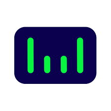

Private · South Korea
WIRobotics Company Profile
Wearable Robotics / Mobility Robotics
WIRobotics facts
- Category
- Wearable Robotics / Mobility Robotics
- Primary focus
- Autonomous Robotics
- Segments
- Autonomous Robotics · Medical
- Country
- South Korea →
- Type
- Private
- Ticker
- Not public / not listed
- Website
- Official website →
- Focus
- Wearable walking-assist robots, gait training, mobility support, and human-responsive robotics
Robologai signal
WIRobotics is tracked for autonomous robotics deployment: mobile systems, field robots, delivery, inspection, logistics, or other real-world automation lanes. Tracked products include WIM.
Strategic Positioning
Why WIRobotics matters to the physical AI economy.
Autonomous RoboticsMedical
2 intelligence tags attached to this profile.
Company Snapshot
Core signals Robologai tracks for WIRobotics.
Product Lineup
Tracked robots and products associated with WIRobotics.
Wearable walking-assist robot
WIM
Wearable walking assistance, gait training, daily mobility support, and resistance-mode exercise
Retailer price / not official MSRP: €2,499 incl. tax; £2,224.12 / £2,001.70 incl. tax shown by EU/UK retailers · reference signal
Robot profile →
Data Quality
Robot coverage, official sources, market type, and review status.
Source Notes
WIRobotics source trail.
Market Signal
How WIRobotics fits into the robotics economy.
Related Companies